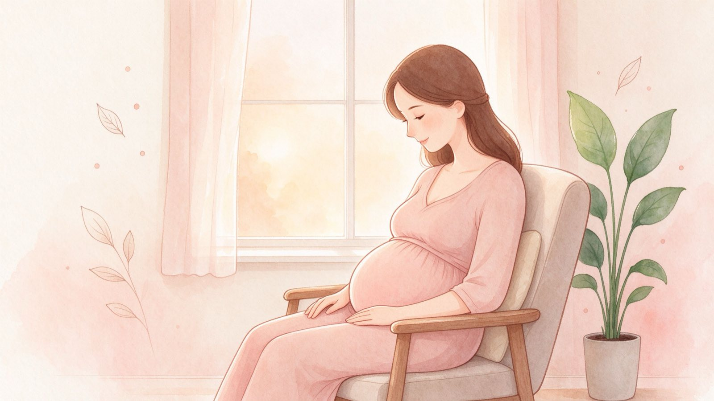

← All pregnancy tools
Pregnancy Tools
When Should I Feel the Baby Move?
Waiting for that first little flutter? Here's when most expectant parents first feel movement, what it feels like, and when to check in.

Short answer
Usually between 18 and 22 weeks for first-time parents.
People who've been pregnant before often feel it a little earlier, around 16–18 weeks. Early movement is soft — think butterflies or bubbles, not strong kicks.
Movement week by week
| Weeks | What to expect |
|---|
| 12–16 | Baby is moving, but too small and cushioned for you to feel most of it. |
| 16–18 | People who've been pregnant before may start feeling gentle flutters. |
| 18–22 | The first noticeable movements (quickening) for most first-time parents. |
| 24–28 | Movements become clearer — kicks, rolls, and turns you can actually feel. |
| 28+ | A regular pattern develops. This is when most teams suggest counting kicks. |
What the first movement feels like
Early movement is surprisingly subtle. People often describe it as:
🦋 Butterflies fluttering in your tummy · 💨 A little bubble popping · 🐟 A small fish swimming · 🍿 Popcorn popping gently
It's normal for early movement to be inconsistent — some days you'll feel it several times, other days not at all. This changes as the baby grows and you get closer to the third trimester.
Start counting kicks from 28 weeks
Once movement is regular, most care teams suggest tracking it daily. A common goal: feel at least 10 movements in about 2 hours. The baby has active and sleepy periods, so pick a quiet time (often after a meal) and sit or lie on your side.
You can use our free Kick Counter to time and count easily.
Check in with your care team if
You're around 24–25 weeks and still haven't felt any movement at all.
Movement suddenly drops off, especially in the second half of pregnancy.
Kicks feel much weaker or fewer than they usually do, for no clear reason.
You just feel something is wrong — it's always worth a call.
Common questions
When do you first feel the baby move?▾
First-time parents usually feel the first movement (quickening) between about 18 and 22 weeks. People who have been pregnant before often feel it earlier, around 16 to 18 weeks.
What does the first movement feel like?▾
Early movements are gentle — like butterflies, bubbles, a flutter, or a little fish swimming. They don't feel like strong kicks at first.
Is it normal to not feel the baby move yet at 20 weeks?▾
Yes, for many first-time parents it's still normal at 20 weeks. If you haven't felt any movement by around 24 to 25 weeks, mention it at your next visit.
When should I start counting kicks?▾
Most care teams suggest starting regular kick counts around 28 weeks. A common goal is to feel at least 10 movements in about 2 hours.
When should I worry about less movement?▾
Contact your doctor or midwife right away if movement suddenly drops off, or if you're in the second half of pregnancy and kicks feel much weaker or fewer than usual.
This is general information based on standard pregnancy guidelines and is not medical advice. Always follow your doctor or midwife's guidance about your own pregnancy.